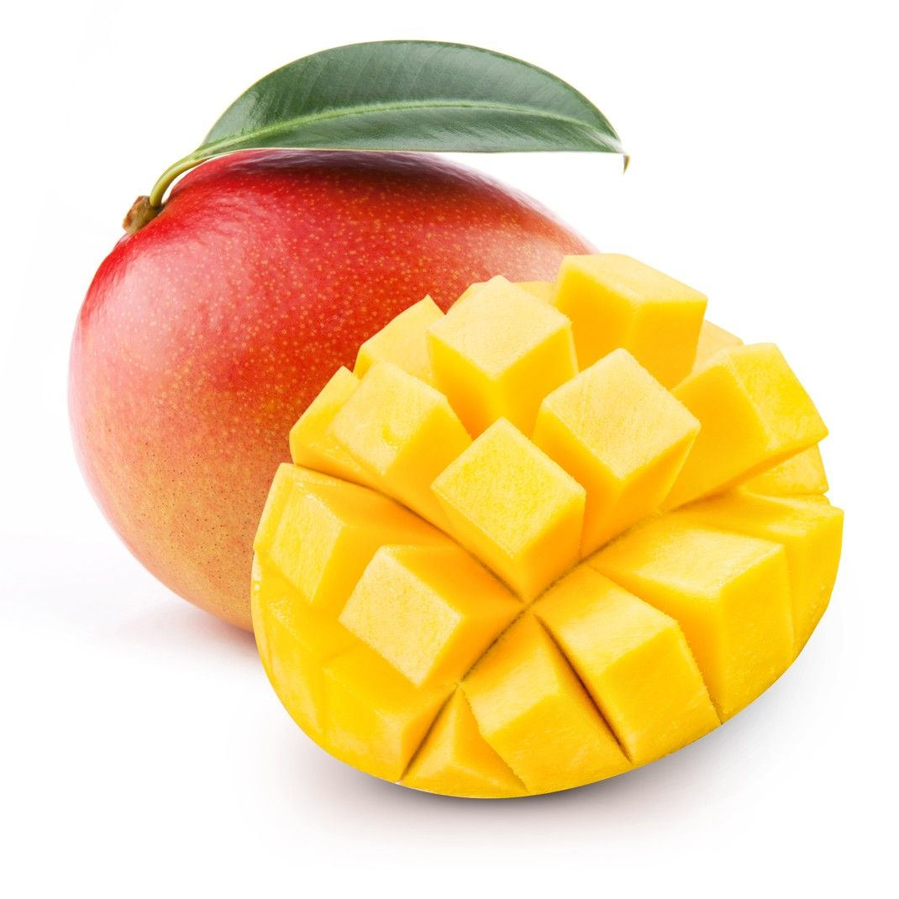

Mango

| Index |
|---|
| Short description |
| Nutritional value |
| Health benefits |
| Best time to eat |
| Who shoud avoid |
| Fun fact |
Short Description
Mango is known as the “King of Fruits” and is native to South Asia. It is loved for its sweet taste, rich aroma, and juicy flesh. Mangoes are eaten raw, in juices, shakes, desserts, and even in pickles when unripe.
Nutritional Value
| Nutrient | Amount |
|---|---|
| Calories | 60 kcal |
| Carbohydrates | 15 g |
| Dietary Fiber | 1.6 g |
| Vitamin C | 36% |
| Potassium | 168 mg |
| Vitamin A | 21% |
Health Benefits
- Boosts immunity due to vitamin C and A
- Improves digestion by activating digestive enzymes
- Good for eyes because of vitamin A
- Supports skin health
- Provides natural energy
Best Time to Eat
Mango is best eaten in the morning or early afternoon.It is a heavy fruit, so eating it early gives enough time for digestion.
Avoid eating mango:
- Along with dairy if digestion is weak
- Late at night
Best practice: Eat mango alone or after light meals.
Who Should Avoid
- Diabetic patients, due to natural sugars
- People with heat-related issues, as mango increases body heat
- Those with acne-prone skin, if eaten excessively
Fun Fact
- Mangoes have been cultivated for over 4,000 years
- India is the largest producer of mangoes
- There are 1,000+ varieties of mangoes